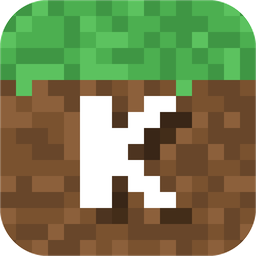
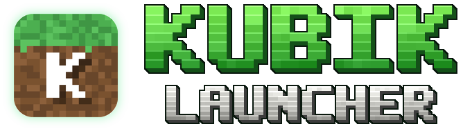

Шейдеры из коробки
Тени, отражения, лучи солнца, волны и качание листвы — включены сразу. Для слабых ПК есть лёгкий режим.



Kubik Launcher
Визуалы, HUD и хелперы для Minecraft 1.21.11. Своё меню, аккаунт Kubik и подписки — на Windows, Mac и Android.
Больше 50 функций в одном моде. Меню клиента — на правый Shift.
Всё нужное на экране — и двигается мышью.
Красиво и удобно, без лишнего на экране.
Зелёное главное меню Kubik и панель по ESC.
Один аккаунт на всех устройствах.
Со сборкой Kubik идёт ViaFabricPlus — заходи на сервера 1.8–1.21 из одной игры.
Подсказки на экране — играешь ты сам. Включаются в Click GUI → «Хелперы».
Для FunTime, HolyWorld и ReallyWorld: возьми Трапку или Пласт — увидишь, где они встанут.
Hit Range — круг дальности удара: зелёный, если достаёшь, красный — если нет.
Быстрые команды и полезные мелочи.
Тени, отражения, лучи солнца, волны и качание листвы — включены сразу. Для слабых ПК есть лёгкий режим.
Kubik Launcher для Windows и Mac сам поставит Minecraft 1.21.11, Java, Fabric и свежий Kubik Client.
Шейдеры в комплекте: Complementary Reimagined от EminGT, а для слабых ПК — MakeUp Ultra Fast от KDXavier. Плюс Sodium и Iris.
Есть Prism Launcher? Add Instance → Import и вставь ссылку https://toperlutty-bit.github.io/Kubik-Launcher/downloads/Kubik-1.0.9.mrpack
Только мод для своей сборки Fabric 1.21.11 — kubik-client-1.0.9.jar (Fabric API уже внутри). Подробнее для всех платформ
Базовые функции бесплатны. Подписка открывает всё остальное и поддерживает проект.
Купить подписку — в Discord yttoper1. Ключ активируется в игре: ESC → Kubik Launcher → «Активировать ключ».
Самое частое.
Убери из папки mods старые версии Kubik Client — два мода Kubik сразу не запустятся. Скачай свежую сборку по ссылке выше. Если вылет остался — пришли начало crash-отчёта в Discord.
Не скачивай .mrpack браузером: в Prism нажми Add Instance → Import и вставь ссылку — Prism скачает сам.
ESC → Kubik Launcher → «Профиль». Назови ID в Discord yttoper1 — подписку выдадут прямо на профиль, вводить ничего не придётся.
Лаунчер ещё не подписан платным сертификатом. Нажми «Подробнее» → «Выполнить в любом случае».
Открой «Системные настройки» → «Конфиденциальность и безопасность», внизу нажми «Всё равно открыть». Или в Finder нажми на Kubik Launcher правой кнопкой → «Открыть».
Да. На Mac есть Kubik Launcher. Kubik Client — обычный мод Fabric, на Android он работает в лаунчерах Java-версии с поддержкой Fabric.